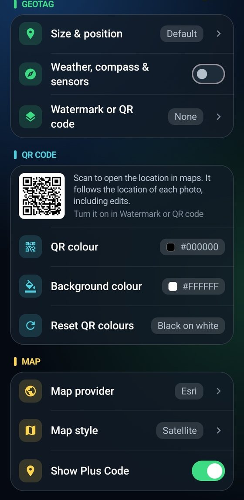
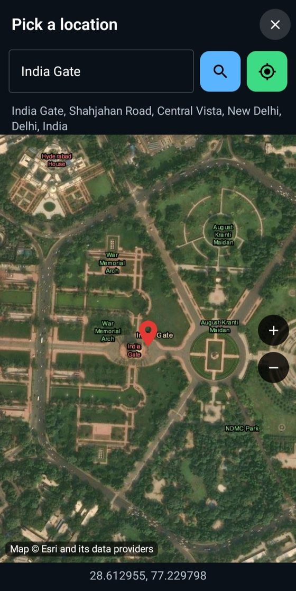
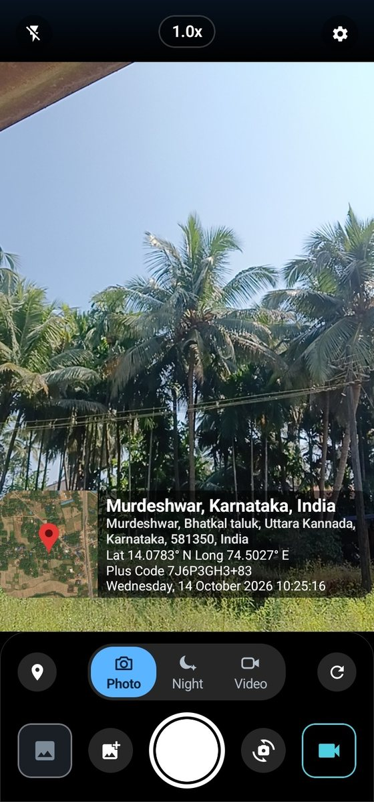

Free & open-source geotag camera for Android
Photocator puts your GPS location, address, map, date, weather and a scannable QR code right on your photos and videos. No ads. No accounts. No tracking.
Android 8.0+ · Free · GNU GPL v3.0


Camera
See exactly what will be stamped before you shoot. The geotag updates as you move, and the same design is burned into photos and videos.
Watermark & QR code
Resize and move the geotag, round or sharpen its corners, and flip the map to either side.
Location
Wrong place? Search for it or drop a pin on the map, and the address, coordinates and QR code all update to match.
Everything included
Coordinates, Plus Code, place name and address on photos and video.
Scan to open the exact spot. Custom colours, always matches the edited location.
Import several photos and give them one common geotag, on the photo or below it.
Save named places from the map or search and reuse them anywhere.
Esri, OpenStreetMap and OpenTopoMap with satellite, street and terrain styles.
Night mode for photos and a brighter low-light video pipeline.
Optional weather, compass heading and magnetic field in the geotag.
A gallery-style viewer with back, share and delete for each photo and video.
No ads, accounts or analytics. Your files never leave your phone.
How it works
Photocator finds your GPS position and builds the geotag live.
Take a photo, night shot or video. Edit the location afterwards if needed.
The geotag is stamped into the file and saved to your gallery.
Free forever. Install the APK from GitHub and allow installs from your browser when asked.
FAQ
Photocator is a free, open-source geotag camera app for Android. It stamps every photo and video with your GPS coordinates, place name, full address, a map, the date and time, and optionally the weather, compass heading and a QR code of the location.
Yes. Photocator is free software under the GNU GPL v3.0. It has no ads, no accounts, no in-app purchases and no analytics. The full source code is on GitHub.
Tap the add-photo button on the camera screen and select as many photos as you like from your gallery. Choose one location, from the map picker, a place search, your current position or a saved location, and the same geotag is added to all of them. Place it on the photo or in a strip below it.
Yes. In Settings, choose Watermark or QR code and pick QR code. Scanning it opens the exact location in any maps app. The QR code follows the location of each photo, including edits, and you can set its colour and background colour.
Yes. Upload your logos in Settings and show one in the corner of the geotag, for every photo or just a single one. A watermark and a QR code can't be shown together, so the corner shows one or the other.
Saved locations are places you name once, from the map or by search, and reuse on any photo. They appear under Use saved address when you edit a captured photo or add a geotag to existing photos.
Esri is the default, with satellite, streets, topographic and more. You can also switch to OpenStreetMap or OpenTopoMap in Settings, and the app then shows that provider's map styles for you to choose from.
The camera and GPS work offline, but the address, place name, weather and map images are fetched online. Without a connection the geotag shows your coordinates and whatever was already cached.
No. Your photos, videos and location stay on your phone. The developer does not receive any of your data. The app only sends coordinates to public map, address and weather services to build the geotag.
Photocator needs Android 8.0 (API 26) or later.
Specs
| Platform | Android 8.0 (API 26) or later |
| Price | Free, no in-app purchases |
| License | GNU GPL v3.0, open source |
| Modes | Photo, Night, Video |
| Geotag data | Map, place, address, coordinates, Plus Code, date, weather, compass, QR code |
| Map providers | Esri, OpenStreetMap, OpenTopoMap |
| Developer | Karthik Hegde |
Privacy policy
Last updated: October 2026
To build the geotag, the app sends your coordinates (or a place you search for) to these public services. They have their own privacy policies:
Your phone's IP address is visible to these services, as with any internet request. The app does not send your photos to them. QR codes are generated on your device.
Settings, saved locations, your watermark images and cached map tiles are stored locally in the app's private storage. Photos and videos are saved in your gallery folders and can be deleted at any time. Uninstalling the app removes its private data.
Your geotagged photos contain your location. Think before posting them publicly, since anyone who sees them can see where they were taken.
Photocator does not knowingly collect any information from anyone, including children.
If this policy changes, the updated version will be published on this page. For questions, open an issue at github.com/karthikhegde25/Photocator/issues.